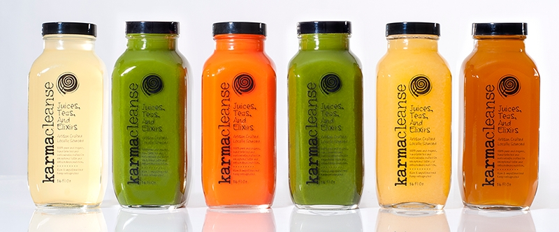
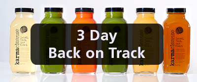
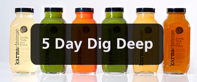
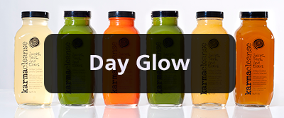
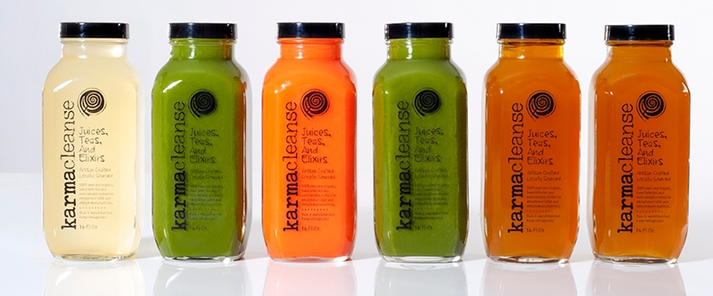
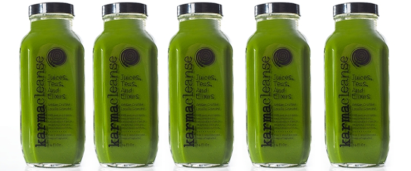
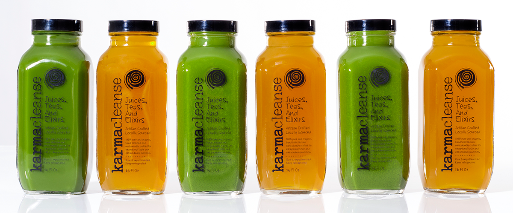
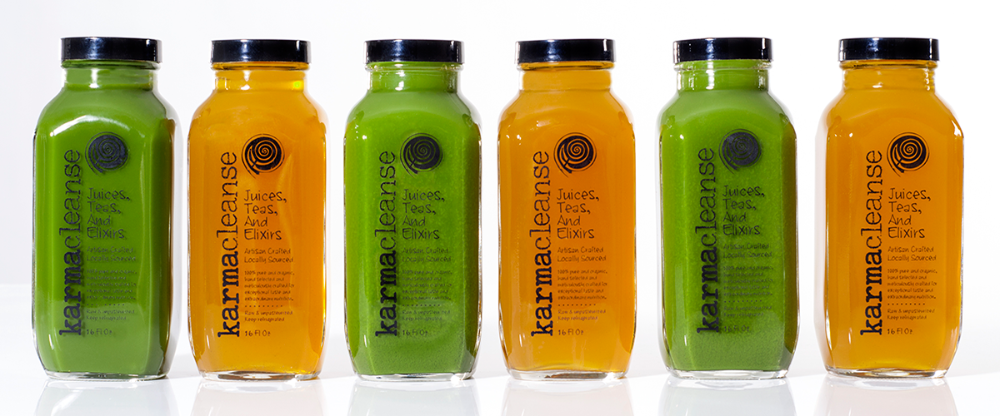
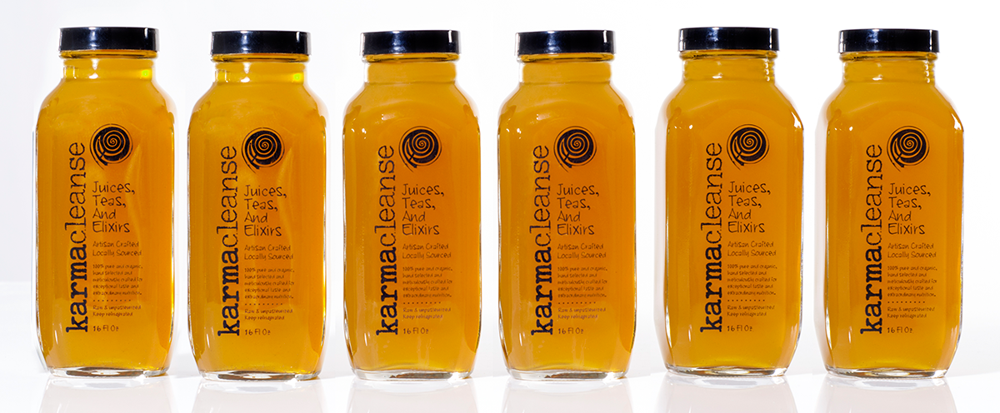

-   Back On Track 3 Day Cleanse This is our most popular cleanse and a good choice for veteran cleansers as well as first timers. Back On Track allows your body to shift its energy from digesting food to rebuilding cells, strengthening your immune system and flushing away accumulated waste. . Choose Cleanse
-  Dig Deep 5 Day Cleanse Our 5 Day Cleanse digs deep into detoxing giving your body a longer rest. After 5 days, your body will feel energized. Your immune system is stronger and your body will likely feel light, lean and vibrant. Digging Deep is for those who have had some experience cleansing, eat a diet rich in fresh, whole foods and are ready for a new level of clean. Choose Cleanse
-  Day Glow Tuesdays are the day we glow! Clients who cleanse once a week have seen amazing results! After one day of Cleansing, enzymes stop visiting your stomach and instead travel into the bloodstream and intestines, where they get busy attacking old waste matter, damaged cells, and pollutants. Give yourself the day off! You deserve it! Choose Cleanse
-

 Before Dinner Drinks
This is a great alternative to our Day Glow Cleanse. Many people find “hydrating til’ dinner” works best for them and their lifestyle. You get 4 of our signature Juices and 2 Teas. Think of this as a “fast” with the flexibility of eating a small, nutritious meal. Choose Cleanse
Before Dinner Drinks
This is a great alternative to our Day Glow Cleanse. Many people find “hydrating til’ dinner” works best for them and their lifestyle. You get 4 of our signature Juices and 2 Teas. Think of this as a “fast” with the flexibility of eating a small, nutritious meal. Choose Cleanse
-

 Straight Up Greens
This is for those of you who know green is good. Our Mixed Greens could very well be the best thing on Earth! Because disease cannot thrive in an alkaline body, drinking chlorophyll-packed green juice on a regular basis is the perfect defense mechanism to ward off unwanted aliments. No choking anything down here! Our Mixed Greens taste so good, you will have to arm wrestle your kids for it. No doubt about it, get hooked and you will feel lean, clean and….well Green! Choose Cleanse
Straight Up Greens
This is for those of you who know green is good. Our Mixed Greens could very well be the best thing on Earth! Because disease cannot thrive in an alkaline body, drinking chlorophyll-packed green juice on a regular basis is the perfect defense mechanism to ward off unwanted aliments. No choking anything down here! Our Mixed Greens taste so good, you will have to arm wrestle your kids for it. No doubt about it, get hooked and you will feel lean, clean and….well Green! Choose Cleanse
-
 
Green With Envy
This is a perfect way to transition out of a Cleanse or incorporate greens into your every day diet. When accompanied with a clean, whole foods diet your body stays hydrated, alkalized and clean. A clean body looks good and feels good! Choose Cleanse

Green With Envy
This is a perfect way to transition out of a Cleanse or incorporate greens into your every day diet. When accompanied with a clean, whole foods diet your body stays hydrated, alkalized and clean. A clean body looks good and feels good! Choose Cleanse
-  Tea Party This is for our tea drinkers. Unlike other green teas that can finish with a bitter aftertaste, our tea is mellow, smooth and easily enjoyed hot or cold. A Rutgers University evaluation found our tea to possess an unusually high amount of antioxidants which prevent illness and deter the aging process. Choose Cleanse